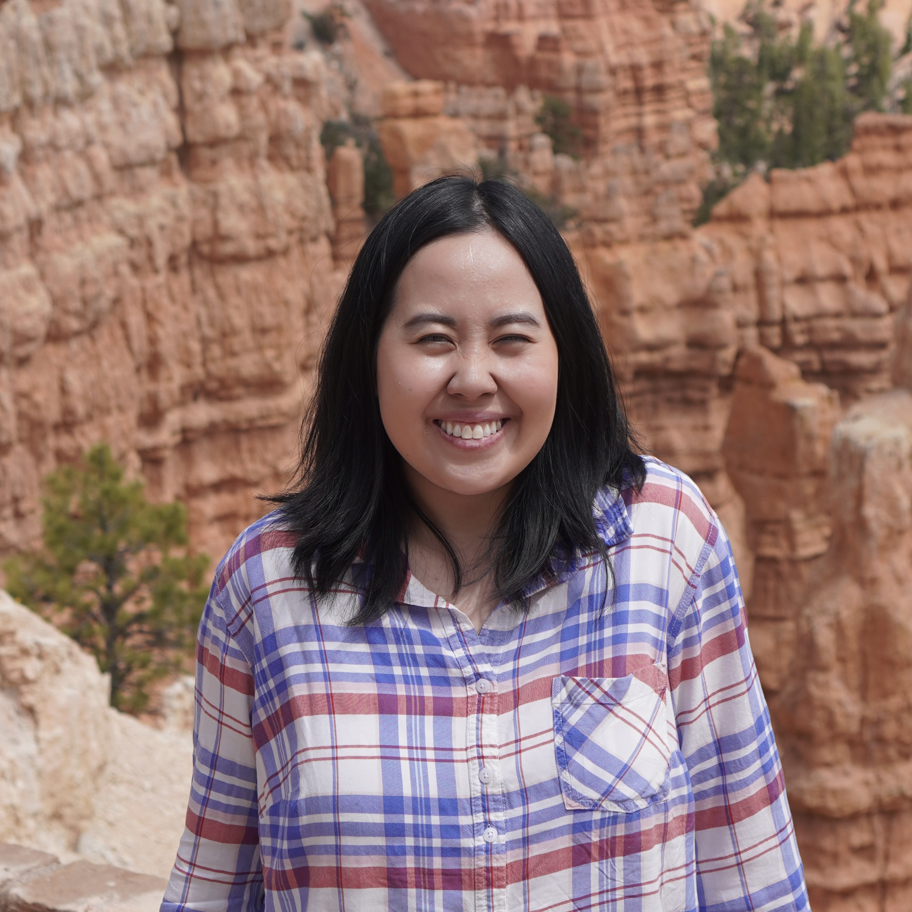

Tense Fuchs | WDD 130
Hello! My name is Tense Fuchs and I am from Bangkok, Thailand. I enojoy reading and playing the piano.
I currently live in Frankfurt, Germany with my husband and one daughter.
Hello! My name is Tense Fuchs and I am from Bangkok, Thailand. I enojoy reading and playing the piano.
I currently live in Frankfurt, Germany with my husband and one daughter.